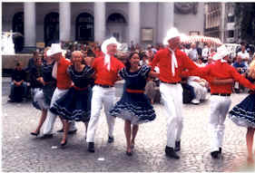
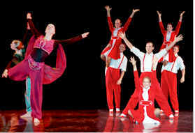
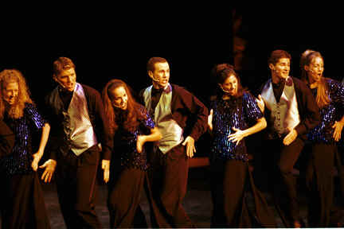
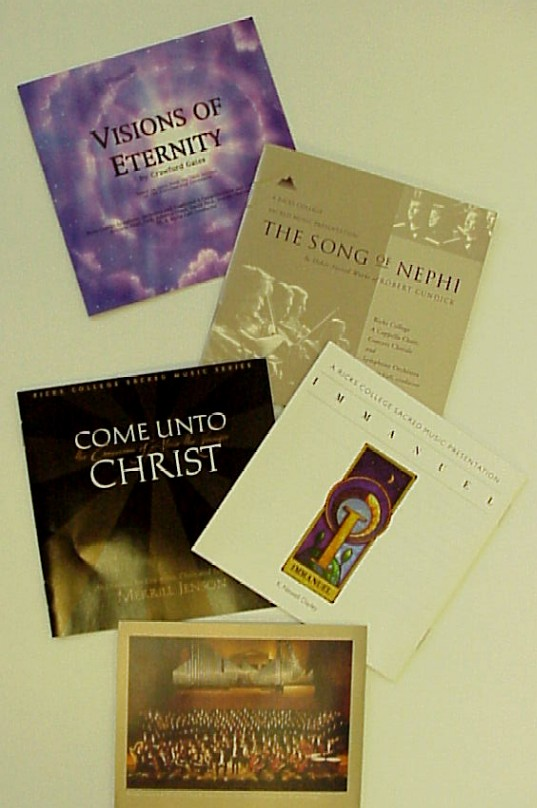

| Home | Alumni & Friends | Students | Employees | Directories | Search | Index | Help |
Ricks College Performance Scheduling
Performance Scheduling coordinates regional and national shows
and tours which give students a chance to further develop their talents and
opportunities to perform. At the same time the students become goodwill ambassadors. Ricks
College Performance Tours are approved by the Church Educational System.
Locations of Performance Tours
 |
American
Folk Dancers |
Extravadance |
 |
 |
Performers are selected by audition and represent some of the most outstanding talent on campus. Each member brings experience and enthusiasm to the stage and adheres to an ambitious rehearsal and performance schedule. Touring Production: 2001 show is entitled "Doors." This production will showcase the music of film and stage in a spirited presentation of the wonders in life’s travels and opportunities. Music Department. |
| Sacred Music
Series Ricks College is proud to announce the fifth tour of the Sacred Music Series. Every other year, Ricks College commissions a significant new composition of sacred music. This music is masterfully written to bring together the richness of melodies, the harmony of full orchestration, the heavenly fullness of collegiate choirs, and the spirit of a sacred message. Each presentation results from a synergetic effort of the composer, the directors, and the musicians. The 150 students who tour are a combination of the Collegiate Singers and Symphony Orchestra. An additional 180 Ricks vocalists from and the Men’s and Women’s Choirs will join for special concerts on campus and at the Tabernacle on Temple Square in Salt Lake City, UT. In the spring of 2001, the series will tour in the Washington DC area with the commissioned work by Daniel E. Gawthrop entitled The Passion and the Promise of Our Lord Jesus Christ. |
 |
| For additional information about Ricks College
performing groups, contact: Ricks College |
Back to: |